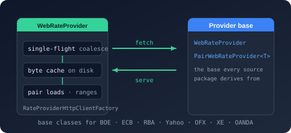

Namespace Bodu.Financial.ExchangeRates

Bodu.Financial.ExchangeRates
Purpose
Bodu.Financial.ExchangeRates is the exchange-rate namespace of the Bodu.Financial family. The core FX types — ExchangeRate values, currency pairs, rate series and stores, and the standard IDatedRateProvider and timeless IRateProvider contracts — ship in the core Bodu.Financial package. The separate Bodu.Financial.ExchangeRates package layers the web/HTTP provider machinery on top (the abstract WebRateProvider and PairWebRateProvider<TSeries> bases and their supporting types), so the core package carries no HTTP machinery. The same flattened namespace then gathers the concrete providers for the public feeds — the Bank of England, the European Central Bank, the Reserve Bank of Australia, Yahoo Finance, OFX, XE.com, OANDA, Fixer (fixer.io), exchangerate.host, FRED (St. Louis Fed), and the IMF — each shipped as its own package. Every provider downloads and parses its source over a requested date window into a dated series, so they all compose with Money.ConvertTo, the caching and aggregating layer, and the rest of the FX stack.
The single-base providers (BoE, ECB, RBA, IMF) publish one base currency (GBP, EUR, AUD, USD), so they support direct (base→X) and inverse (X→base) lookups but not cross pairs; IMF downloads the IMF's monthly Representative Exchange Rates tab-separated report and normalizes its quotation direction to a consistent USD base. The market providers (Yahoo, OFX, XE, OANDA, Fixer, exchangerate.host) fetch a distinct series per currency pair, so they serve arbitrary pairs; FRED is per-pair too but maps each pair to a source series identifier (with a built-in map for the major pairs). Fixer, exchangerate.host, and FRED require an API key on their options; IMF is keyless and daily. Every provider is IDisposable: the options-only constructor builds and owns its HttpClient, while the constructor that accepts an HttpClient (the form the dependency-injection registration uses) leaves the client's lifetime to the caller. Downloaded responses are cached on disk by default.
Each provider ships its own dependency-injection registration in the Bodu.Financial.ExchangeRates namespace, so a single using Bodu.Financial.ExchangeRates; makes the Add<Source>... extension methods available — AddBoeExchangeRates, AddEcbExchangeRates, AddRbaExchangeRates, AddYahooExchangeRates, AddOfxExchangeRates, AddXeExchangeRates, AddOandaExchangeRates, AddFixerExchangeRates, AddExchangeRateHostExchangeRates, AddFredExchangeRates, and AddImfExchangeRates. There is no separate per-provider *.DependencyInjection package; the registration lives in the provider's own runtime package over the shared AddWebRateProvider machinery.
Static documentation
- Introduction — the infrastructure package: the two provider bases, the fetch machinery, the eleven-package provider family with status and DI registration, and the "which provider" table.
- Core concepts — warm-then-lookup, bulk vs pair,
RateRangeResult, history availability, payload cache vs rate cache, single-flight, synchronous access, resilience, failure modes, lifetimes, thread safety. - Getting started — install, direct construction, DI registration with an
appsettings.jsonsection, API keys, range reads, and the payload cache. - Built-in exchange-rate providers guide — construction, warming the store or a pair, the shared lookup surface, dependency injection, and composing a provider with caching and aggregation.
- Testing your own provider — the in-repository contract-test bases (see the
Bodu.Financial.ExchangeRates.Testingoverview) and the offline stub handler.
Key types
Core exchange types (in the Bodu.Financial package)
- IRateProvider, IDatedRateProvider — timeless and dated provider contracts.
- IHistoricalRateProvider — the optional contract a provider implements to advertise how far back it can serve rates (its
HistoryAvailability), so composing layers avoid asking for dates it has declared unavailable. - ExchangeRate, CurrencyPair, RateObservation, RateSeries — observation record, strongly-typed (from, to) key, single dated observation value, and an O(log n) read-optimised time series.
- RateSeriesBuilder, RateSeriesKey, RateTableBuilder — mutable companion for building or editing a series, the (pair, provider) key, and a higher-level multi-series editor for import workflows.
- RateLookupOptions, RateLookupResult, RateDateResolution — resolution policy options and the audit-grade lookup result.
- RateProvenance — readonly-record-struct recording where a rate came from (provider, optional backend, cached-at / as-of instants), with
LiveandFromCachefactories. - FixedRateTable, FixedDatedRateProvider, DatedRateProviderAdapter — in-memory provider implementations and an adapter that pins a date to a dated provider for codebases that don't need the dated surface. Grouping several providers (prioritised fallback, averaging, per-FX-pair routing) and read-through caching live in
Bodu.Financial.ExchangeRates.Caching. - RateHistoryAvailability, RateRangeResult, DateRangeCoverage — how far back a source serves rates (unbounded, fixed earliest date, or rolling window), the whole-range read result, and the coverage record the caching layer stores.
- RateSeriesNotFoundException (a
KeyNotFoundException) — the missing-series failure raised by the provider stack.
Web-provider machinery (in the Bodu.Financial.ExchangeRates package)
- WebRateProvider, WebRateProviderOptions — the abstract HTTP-backed dated-provider base that every provider here derives from (it accumulates fetched observations into an immutable book / snapshot, coalesces concurrent loads, and owns or borrows its
HttpClient) and the abstract options carryingBaseAddress,HttpTimeout,UserAgent,DefaultLookback,CurrencyAliases, and per-stage log levels. - PairWebRateProvider<TSeries> — the specialisation the pair-serving providers (Yahoo, OFX, XE, OANDA, Fixer, exchangerate.host, FRED) build on. IMF, like the central-bank providers, extends WebRateProvider directly.
- IPairRateSource<TSeries>, IPairRateLoader, CurrencyPairRequest, PairRateData<TSeries> — the pair-based fetch contracts (
GetPairAsync), the request struct (pair + inclusive date range), and the result record (pair, observations, source-specific series metadata). - SingleFlightCoordinator<TKey> — keyed single-flight coordinator that coalesces concurrent loads of the same key onto one in-flight operation (
RunAsync/RunAsync<TResult>), used internally byWebRateProviderto deduplicate endpoint fetches. - FileSystemByteCache<TKey> — the abstract base for the file-feed providers' on-disk raw-response caches (best-effort
TryGetCore/StoreCorekeyed by a download unit); a derived cache supplies only the file name and, optionally, a freshness rule. The BoE / ECB / RBAFileSystem*Cacheimplementations derive from it. - RateProviderHttpClientFactory — builds the owned
HttpClientfor the options-only constructor form. - ExchangeRateFormatException (a
FormatException) — the feed-parse failure raised by the provider stack.
Registration machinery (in the Bodu.Financial.ExchangeRates.DependencyInjection package)
- WebRateProviderExtensions — the shared
AddWebRateProvider<TProvider, TOptions>(...)registration machinery (namedHttpClientplus Polly resilience) that every provider'sAdd<Source>...method delegates to, exposed in the same flattenedBodu.Financial.ExchangeRatesnamespace.
Bank of England (GBP base; daily spot, CSV export)
- BoeRateProvider — the provider; warm it with
LoadRangeAsync, then resolve through the dated or timeless surface. Registered withAddBoeExchangeRates. - BoeRateProviderOptions, BoeEndpointOptions — the endpoint, HTTP, on-demand-access, and on-disk response-cache configuration, and the series-to-endpoint map.
- BoeSeriesInfo — a discovered currency series, surfaced by
GetAvailablePairs. - IByteCache<TKey>, FileSystemBoeResponseCache — the shared raw-byte cache seam and its on-disk Bank of England implementation.
European Central Bank (EUR base; eurofxref XML feed)
- EcbRateProvider — the provider; warm it with
LoadRangeAsync. Registered withAddEcbExchangeRates. - EcbRateProviderOptions, EcbRateFeed — the options (endpoint, HTTP, on-demand access, on-disk feed cache) and the
eurofxreffeed variant a load fetches. - EcbSeriesInfo — a discovered currency series, surfaced by
GetAvailablePairs. - IByteCache<TKey>, FileSystemEcbFeedCache — the shared raw-byte cache seam and its on-disk
eurofxreffeed implementation.
Reserve Bank of Australia (AUD base; published .xls workbooks, split into eras)
- RbaRateProvider — the provider; warm it with
PreloadAsync,LoadEraAsync, orLoadRangeAsync. Registered withAddRbaExchangeRates. - RbaRateProviderOptions, RbaEraWorkbook — the options (base URL, era list, HTTP, on-demand access, on-disk workbook cache) and one published workbook era.
- RbaSeriesInfo — a discovered currency series, surfaced by
GetAvailablePairs. - IByteCache<TKey>, FileSystemRbaWorkbookCache — the shared raw-byte cache seam and its on-disk workbook implementation.
Yahoo Finance (arbitrary pairs; chart per ticker)
- YahooRateProvider — the provider; warm a pair with
LoadPairAsync. Registered withAddYahooExchangeRates. - YahooRateProviderOptions — the endpoint, HTTP, user-agent, and on-demand-access configuration.
- YahooSeriesInfo — a discovered pair and its ticker symbol, surfaced by
GetAvailablePairs.
OFX (arbitrary pairs; spot-rate-history JSON service)
- OfxRateProvider — the provider built on the shared
PairWebRateProvider<TSeries>base; warm a pair withLoadPairAsync. Registered withAddOfxExchangeRates. - OfxRateProviderOptions — the endpoint, reporting interval, decimal precision, HTTP timeout, and user agent.
- OfxSeriesInfo — a discovered pair and its quote-currency ISO code, surfaced by
GetAvailablePairs.
XE.com (arbitrary pairs; charting-rates JSON service)
- XeRateProvider — the provider built on the shared
PairWebRateProvider<TSeries>base; warm a pair withLoadPairAsync. Registered withAddXeExchangeRates. - XeRateProviderOptions — the endpoint, HTTP, and token-acquisition configuration.
IXeAuthTokenProvider,XeScrapingAuthTokenProvider(internal) — the authorization-token seam and the default implementation that acquires XE'sBasiccredential automatically.- XeSeriesInfo — a discovered pair, surfaced by
GetAvailablePairs.
OANDA (arbitrary pairs; anonymous rolling ~180-day history window)
- OandaRateProvider — the provider built on the shared
PairWebRateProvider<TSeries>base; advertises its rolling window throughWebRateProvider.HistoryAvailability. Registered withAddOandaExchangeRates. - OandaRateProviderOptions — the Historical Currency Converter endpoint, HTTP, and window configuration.
- OandaSeriesInfo — a discovered pair, surfaced by
GetAvailablePairs.
Fixer (fixer.io; arbitrary pairs; time-series / single-date JSON, API key)
- FixerRateProvider — the provider built on the shared
PairWebRateProvider<TSeries>base; warm a pair withLoadPairAsync. Registered withAddFixerExchangeRates. - FixerRateProviderOptions — the endpoint,
ApiKey(access_key), time-series/single-date paths, HTTP, and on-demand-access configuration. - FixerSeriesInfo — a discovered pair with its base and quote currencies, surfaced by
GetAvailablePairs.
exchangerate.host (arbitrary pairs; time-series / single-date JSON, API key)
- ExchangeRateHostRateProvider — the provider built on the shared
PairWebRateProvider<TSeries>base; warm a pair withLoadPairAsync. Registered withAddExchangeRateHostExchangeRates. - ExchangeRateHostRateProviderOptions — the endpoint,
ApiKey(access_key), source/currencies paths, HTTP, and on-demand-access configuration. - ExchangeRateHostSeriesInfo — a discovered pair with its source and quote currencies, surfaced by
GetAvailablePairs.
FRED (St. Louis Fed; mapped pairs; series/observations JSON, API key)
- FredRateProvider — the provider built on the shared
PairWebRateProvider<TSeries>base; warm a pair withLoadPairAsync. Registered withAddFredExchangeRates. - FredRateProviderOptions — the endpoint,
ApiKey(api_key), and theSeriesMapmapping each pair to a FREDseries_id(built-in map for the major USD pairs). - FredSeriesInfo — a discovered pair and its FRED series identifier, surfaced by
GetAvailablePairs.
IMF (base USD; monthly Representative Exchange Rates TSV report; keyless, daily)
- ImfRateProvider — the single-base (USD) provider built on the shared
WebRateProviderbase; warm the store withLoadRangeAsync. Registered withAddImfExchangeRates. - ImfRateProviderOptions — the report endpoint (
ReportPath/ReportType), the on-disk month cache settings, and theCurrencyNamesmap from IMF currency label to ISO 4217 code. - ImfSeriesInfo — a discovered currency series (always quoted against USD), surfaced by
GetAvailablePairs. - ImfReportMonth — one calendar month of the Representative Exchange Rates report, the download unit the provider fetches and caches.
- IImfReportCache, FileSystemImfReportCache, NullImfReportCache — the raw-report cache seam, its on-disk implementation, and the no-op cache used when on-disk caching is disabled.
Minimal sample
using Bodu.Financial;
using Bodu.Financial.ExchangeRates;
using var ecb = new EcbRateProvider(new EcbRateProviderOptions());
await ecb.LoadRangeAsync(new DateOnly(2023, 1, 1), new DateOnly(2023, 12, 31));
RateLookupResult usd = ecb.GetRate("EUR", "USD", new DateOnly(2023, 1, 3));
To register a provider in the container, add using Bodu.Financial.ExchangeRates; and call the source's Add<Source>... method — for example services.AddEcbExchangeRates();. See the providers guide for construction, warming, dependency injection, and composing with the caching and aggregating layer.
Classes
BoeEndpointOptions
Configures the provider's connection to the Bank of England Interactive Statistical Database (IADB): where the CSV query endpoint lives and how the HTTP requests that drive it are shaped.
BoeFinancialServiceBuilderExtensions
Provides the fluent registration of the Bank of England exchange-rate provider onto an IFinancialServiceBuilder.
BoeRateProvider
Serves Bank of England daily spot rates as ExchangeRate values, implementing the Bodu.Financial provider contracts over data queried from the Bank's Interactive Statistical Database (IADB) CSV endpoint.
BoeRateProviderOptions
Configures how the BoeRateProvider downloads, caches, and interprets Bank of England daily spot exchange-rate data.
BoeSeries
Maps a quote currency to the Bank of England Interactive Statistical Database (IADB) series code that publishes its daily spot rate against the pound sterling.
BoeSeriesInfo
Describes one currency series discovered in a Bank of England response: the pair it represents and the IADB metadata that identifies it.
BoeServiceCollectionExtensions
Provides a one-call entry point that registers the core Bodu.Financial services together with the Bank of England exchange-rate provider.
DateRangeCoverage
Tracks the set of DateOnly ranges that have actually been observed, as a sorted list of disjoint inclusive intervals that merge on insertion but never bridge a gap.
DatedRateProviderAdapter
Adapts an IDatedRateProvider to the simpler timeless IRateProvider surface by pinning a fixed valuation date and lookup options.
DistributedRateCacheExtensions
Provides the fluent registration of a distributed (Redis-capable) exchange-rate cache onto an IFinancialServiceBuilder.
EcbEndpointOptions
Configures the provider's connection to the European Central Bank's eurofxref endpoints: where the feed files
are published and how the HTTP requests that fetch them are shaped.
EcbFinancialServiceBuilderExtensions
Provides the fluent registration of the ECB euro reference-rate provider onto an IFinancialServiceBuilder.
EcbRateFeed
Identifies one of the eurofxref XML files in which the European Central Bank publishes its euro
foreign-exchange reference rates.
EcbRateProvider
Serves European Central Bank euro reference rates as ExchangeRate values, implementing the
Bodu.Financial provider contracts over data downloaded from the ECB's published eurofxref XML feeds.
EcbRateProviderOptions
Configures how the EcbRateProvider downloads, caches, and interprets ECB euro reference-rate data.
EcbSeriesInfo
Describes one currency series discovered in an ECB feed: the pair it represents and the quote-currency code.
EcbServiceCollectionExtensions
Provides a one-call entry point that registers the core Bodu.Financial services together with the ECB euro reference-rate provider.
ExchangeRateFormatException
The exception thrown when an upstream exchange-rate feed returns data that cannot be interpreted as exchange-rate information — because it is malformed or omits the expected values.
ExchangeRateHostFinancialServiceBuilderExtensions
Provides the fluent registration of the exchangerate.host exchange-rate provider onto an IFinancialServiceBuilder.
ExchangeRateHostRateProvider
Serves exchangerate.host exchange rates as ExchangeRate values, implementing the Bodu.Financial provider contracts over the exchangerate.host time-series and historical JSON REST endpoints.
ExchangeRateHostRateProviderOptions
Configures how the ExchangeRateHostRateProvider addresses and interprets the exchangerate.host foreign-exchange REST service.
ExchangeRateHostSeriesInfo
Describes one currency series fetched from exchangerate.host: the pair it represents and the source and quote currencies the response was denominated in.
ExchangeRateHostServiceCollectionExtensions
Provides a one-call entry point that registers the core Bodu.Financial services together with the exchangerate.host exchange-rate provider.
FileSystemBoeResponseCache
An IByteCache<TKey> that persists downloaded IADB range responses as files in a cache directory, keyed by the inclusive date range that produced them.
FileSystemByteCache<TKey>
Provides a best-effort, file-backed cache of downloaded response bytes keyed by a provider-specific download unit.
FileSystemEcbFeedCache
An IByteCache<TKey> that persists downloaded ECB feeds as files in a cache directory, keyed by the feed that produced them.
FileSystemImfReportCache
An IImfReportCache that persists downloaded IMF monthly reports as files in a cache directory.
FileSystemRbaWorkbookCache
An IByteCache<TKey> that persists downloaded RBA workbooks as files in a cache directory, keyed by the era workbook that produced them.
FixedDatedRateProvider
Provides an immutable IDatedRateProvider facade over an RateBook, applying an explicit provider-priority list to disambiguate pairs that carry observations from more than one publishing source.
FixedRateTable
An IRateProvider backed by a fixed dictionary of (from, to) → rate mappings.
FixerFinancialServiceBuilderExtensions
Provides the fluent registration of the Fixer exchange-rate provider onto an IFinancialServiceBuilder.
FixerRateProvider
Serves Fixer (fixer.io) exchange rates as ExchangeRate values, implementing the Bodu.Financial
provider contracts over the Fixer time-series and historical JSON REST endpoints.
FixerRateProviderOptions
Configures how the FixerRateProvider addresses and interprets the Fixer (fixer.io)
foreign-exchange REST service.
FixerSeriesInfo
Describes one currency series fetched from Fixer: the pair it represents and the base and quote currencies the response was denominated in.
FixerServiceCollectionExtensions
Provides a one-call entry point that registers the core Bodu.Financial services together with the Fixer exchange-rate provider.
FredFinancialServiceBuilderExtensions
Provides the fluent registration of the FRED exchange-rate provider onto an IFinancialServiceBuilder.
FredRateProvider
Serves FRED (Federal Reserve Bank of St. Louis) exchange rates as ExchangeRate values, implementing the Bodu.Financial provider contracts over the FRED series-observations JSON REST endpoint.
FredRateProviderOptions
Configures how the FredRateProvider addresses and interprets the FRED (Federal Reserve Bank of St. Louis) foreign-exchange REST service.
FredSeriesInfo
Describes one currency series fetched from FRED: the pair it represents and the FRED series identifier the observations were read from.
FredServiceCollectionExtensions
Provides a one-call entry point that registers the core Bodu.Financial services together with the FRED exchange-rate provider.
ImfFinancialServiceBuilderExtensions
Provides the fluent registration of the IMF exchange-rate provider onto an IFinancialServiceBuilder.
ImfRateProvider
Serves IMF (International Monetary Fund) Representative Exchange Rates as ExchangeRate values, implementing the Bodu.Financial provider contracts over the IMF's published monthly tab-separated report.
ImfRateProviderOptions
Configures how the ImfRateProvider addresses, caches, and interprets the IMF Representative Exchange Rates monthly report.
ImfReportMonth
Identifies a single calendar month of the IMF Representative Exchange Rates report, the download unit the ImfRateProvider fetches and caches.
ImfSeriesInfo
Describes one currency series discovered in an IMF Representative Exchange Rates report: the pair it represents and the quote-currency code.
ImfServiceCollectionExtensions
Provides a one-call entry point that registers the core Bodu.Financial services together with the IMF exchange-rate provider.
NullByteCache<TKey>
An IByteCache<TKey> that stores nothing, used when on-disk caching is disabled.
NullImfReportCache
An IImfReportCache that stores nothing, used when on-disk caching is disabled.
OandaFinancialServiceBuilderExtensions
Provides the fluent registration of the OANDA exchange-rate provider onto an IFinancialServiceBuilder.
OandaRateProvider
Serves OANDA (Historical Currency Converter) exchange rates as ExchangeRate values, implementing the Bodu.Financial provider contracts over the public OANDA Rates history JSON service.
OandaRateProviderOptions
Configures how the OandaRateProvider addresses and interprets the OANDA Historical Currency Converter rate-history service.
OandaSeriesInfo
Describes one currency series fetched from OANDA: the pair it represents, the quote-currency code reported for it, and the price basis the rates were drawn from.
OandaServiceCollectionExtensions
Provides a one-call entry point that registers the core Bodu.Financial services together with the OANDA exchange-rate provider.
OfxFinancialServiceBuilderExtensions
Provides the fluent registration of the OFX exchange-rate provider onto an IFinancialServiceBuilder.
OfxRateProvider
Serves OFX (ofx.com) exchange rates as ExchangeRate values, implementing the Bodu.Financial provider contracts over the OFX public spot-rate-history JSON REST service.
OfxRateProviderOptions
Configures how the OfxRateProvider addresses and interprets the OFX public spot-rate-history REST service.
OfxSeriesInfo
Describes one currency series fetched from OFX: the pair it represents and the quote-currency code reported for it.
OfxServiceCollectionExtensions
Provides a one-call entry point that registers the core Bodu.Financial services together with the OFX exchange-rate provider.
PairRateData<TSeries>
Represents the normalized result an IPairRateSource<TSeries> produces for one fetch: the resolved currency pair, its dated observations, and the source-specific series metadata.
PairWebRateProvider<TSeries>
Provides the shared machinery for a WebRateProvider that fetches one currency pair per request from a remote feed — per-pair coverage tracking, single-flight request coalescing, the fetch-and-accumulate orchestration, and the diagnostic logging — leaving a derived type to supply only the feed identity and the feed-specific exception text. The actual fetch and parse are delegated to an IPairRateSource<TSeries>.
RateBook
Provides an immutable, read-heavy collection of RateSeries instances keyed by RateSeriesKey (pair + provider), forming the immutable bridge between mutable build-side types (RateTableBuilder) and dated lookup providers ( FixedDatedRateProvider and friends).
RateCacheWarmupExtensions
Provides registration of the startup cache warm-up onto an IFinancialServiceBuilder.
RateCachingExtensions
Provides fluent registration of caching and aggregating exchange-rate providers onto an IFinancialServiceBuilder.
RateLookupOptions
Encapsulates the rules an exchange-rate lookup must apply when an exact-date match is unavailable.
RateProviderHttpClientFactory
Creates and configures the HttpClient a web-backed exchange-rate provider owns when the caller does not supply one, applying the HTTP contract (user agent and request timeout) the remote endpoint requires.
RateRangeResult
Represents the outcome of a range exchange-rate lookup: the observations that fall within the requested window, ordered by date, together with the metadata that describes the request and the span actually covered.
RateSeries
Stores the ordered set of dated exchange-rate observations for a single provider and currency pair, optimised for
read-heavy lookup with allocation-free O(log n) resolution under any RateDateResolution
policy.
RateSeriesBuilder
Provides a mutable construction and editing surface for an RateSeries, maintaining strictly ascending unique observation dates and strictly positive rates while supporting single-observation edits and bulk import.
RateSeriesNotFoundException
The exception thrown when a requested currency pair cannot be served because the upstream feed structurally does not carry it.
RateTableBuilder
Provides a mutable collection of RateSeriesBuilder instances keyed by currency pair and provider, intended for assembling rate observations across many series before producing immutable snapshots.
RbaEraWorkbook
Identifies one of the date-range files in which the Reserve Bank of Australia publishes its historical daily exchange rates.
RbaFinancialServiceBuilderExtensions
Provides the fluent registration of the RBA historical exchange-rate provider onto an IFinancialServiceBuilder.
RbaRateProvider
Serves Reserve Bank of Australia historical exchange rates as ExchangeRate values, implementing the
Bodu.Financial provider contracts over data downloaded from the RBA's published .xls files.
RbaRateProviderOptions
Configures how the RbaRateProvider downloads, caches, and interprets RBA exchange-rate data.
RbaSeriesInfo
Describes one currency series discovered in an RBA workbook: the pair it represents and the RBA metadata that identifies it.
RbaServiceCollectionExtensions
Provides a one-call entry point that registers the core Bodu.Financial services together with the RBA historical exchange-rate provider.
SingleFlightCoordinator<TKey>
Coordinates concurrent asynchronous operations keyed by TKey so that at most one operation
per key runs at a time, with every concurrent caller for that key awaiting the same shared task.
SqliteRateCacheExtensions
Provides the fluent registration of a SQLite-backed exchange-rate cache onto an IFinancialServiceBuilder.
WebRateProvider
Provides the shared machinery for an exchange-rate provider that materializes a remote feed into an in-memory RateBook snapshot: it owns the accumulator and the immutable snapshot, implements the full synchronous and asynchronous lookup matrix once, and optionally owns the HttpClient used to reach the feed. Derived types supply only the feed-specific fetch.
WebRateProviderExtensions
Provides the shared registration machinery for web-based exchange-rate providers on an IFinancialServiceBuilder.
WebRateProviderOptions
Provides the configuration common to every pair-based web exchange-rate source: the endpoint base address, the HTTP contract (user agent and timeout), the synchronous-access and look-back behaviour, the currency-alias map, and the per-concern diagnostic log levels. A concrete source derives from this type to add its own endpoint members and validation.
XeFinancialServiceBuilderExtensions
Provides the fluent registration of the XE.com exchange-rate provider onto an IFinancialServiceBuilder.
XeRateProvider
Serves XE.com exchange rates as ExchangeRate values, implementing the Bodu.Financial provider contracts over the XE charting-rates JSON service.
XeRateProviderOptions
Configures how the XeRateProvider addresses and interprets the XE.com charting-rates JSON service, and how it acquires the authorization token that endpoint requires.
XeSeriesInfo
Describes one currency series fetched from XE.com: the pair it represents and the quote-currency code reported for it.
XeServiceCollectionExtensions
Provides a one-call entry point that registers the core Bodu.Financial services together with the XE.com exchange-rate provider.
YahooFinancialServiceBuilderExtensions
Provides the fluent registration of the Yahoo Finance exchange-rate provider onto an IFinancialServiceBuilder.
YahooRateProvider
Serves Yahoo Finance exchange rates as ExchangeRate values, implementing the Bodu.Financial provider
contracts over the Yahoo Finance v8/finance/chart JSON REST service.
YahooRateProviderOptions
Configures how the YahooRateProvider addresses and interprets the Yahoo Finance chart REST service.
YahooSeriesInfo
Describes one currency series fetched from Yahoo Finance: the pair it represents and the ticker that identifies it.
YahooServiceCollectionExtensions
Provides a one-call entry point that registers the core Bodu.Financial services together with the Yahoo Finance exchange-rate provider.
Structs
CurrencyPair
Represents an ordered pair of currencies that identifies the direction of an exchange-rate quotation.
CurrencyPairRequest
Describes a single pair-based fetch request issued to an IPairRateSource<TSeries>: the currency pair to
load and the inclusive date range to cover.
ExchangeRate
Represents a single dated foreign-exchange rate observation produced by a named provider.
ExchangeRate<TBase, TQuote>
Strongly-typed companion to ExchangeRate where the base and quote currencies are domain invariants encoded as type parameters.
RateHistoryAvailability
Declares how far back in time a provider can serve exchange rates, as one of three shapes: an unbounded archive, a rolling window of the most recent days, or a fixed earliest calendar date.
RateLookupResult
Represents the outcome of a successful exchange-rate lookup, carrying both the resolved rate and the metadata that describes how it was selected.
RateObservation
Represents a single observed exchange rate on a specific calendar date for a series.
RateProvenance
Captures the lineage of a single served exchange rate: the provider name it is attributed to, whether it was resolved directly by a provider or served from a cache, the cache backend that served it, and — for a cache serve — the instant the served data was cached together with the derived age at the time of the lookup.
RateSeriesKey
Identifies a single rate series within an RateTableBuilder by its currency pair and provider.
Interfaces
IByteCache<TKey>
Caches the raw bytes of a downloaded response so an identical download unit need not be re-fetched.
IDatedRateProvider
Defines the contract for an exchange-rate provider that resolves dated and latest lookups and returns metadata describing how each rate was selected, over symmetric synchronous and asynchronous surfaces.
IHistoricalRateProvider
Identifies an exchange-rate provider that advertises how far back it can serve historical rates, so composing layers can avoid asking it for dates it has declared unavailable.
IImfReportCache
Caches the raw bytes of downloaded IMF monthly report files so they need not be re-fetched on every load.
IPairRateLoader
Defines the common warm-up and discovery surface shared by every web-backed exchange-rate provider: a caller can prime a pair's window and enumerate the pairs currently held without knowing the concrete provider or how its feed is organized (per pair, per era, per feed, or per range).
IPairRateSource<TSeries>
Fetches and parses the dated observations for a single currency pair and date range. This is the per-source seam between a PairWebRateProvider<TSeries> and the network: a concrete implementation builds the feed-specific request, issues it, and parses the response into a PairRateData<TSeries>, while tests substitute a fixture-backed implementation.
IRateProvider
Source of foreign-exchange rates used to convert between currencies.
Enums
RateDateResolution
Describes how an exchange-rate lookup should resolve a requested date when an exact match is unavailable.
RateHistoryAvailabilityKind
Identifies how an RateHistoryAvailability bounds the earliest date for which a provider can serve rates.
RateOrigin
Identifies where a served exchange rate was resolved from, distinguishing a value produced directly by a provider from one served out of a cache.